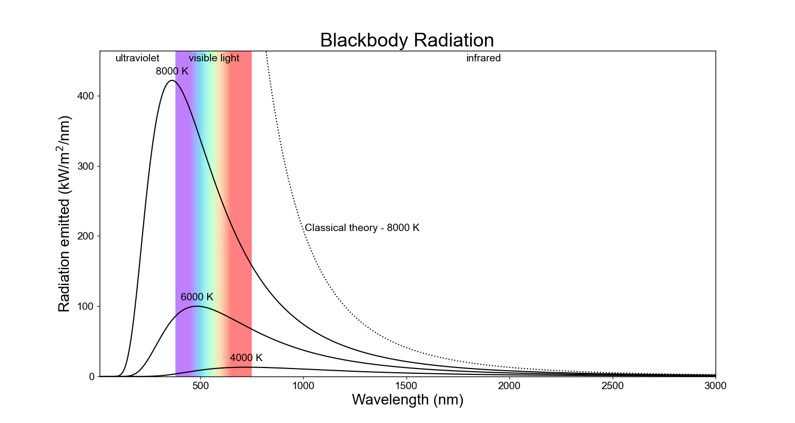
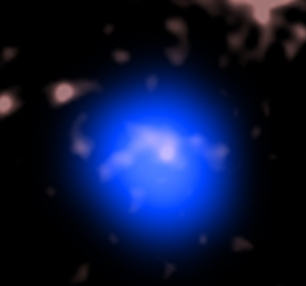

A black body in physics is an object which perfectly absorbs and emits electromagnetic radiation. This concept the subject of the famous (or perhaps infamous) ultraviolet catastrophe, where classical theory dictated that the radiation emitted should blow up to infinity, whereas experimental evidence showed that it must remain finite.

This contradiction between experimental observations and theoretical predictions played a crucial role in the development of quantum mechanics. In particular, it lead to the idea of quantized energy levels and Planck's law, resolving the unphysical behavior predicted by classical physics. But what if infinite temperature was possible? What would such a black body look like?

The above graphic is an image of a collision between two neutron stars captured by NASA's Chandra X-Ray Observatory. Neutron stars are the closest thing we've observed to an infinite temperature black body, with surface temperatures reaching as high as 10 million Kelvin or more. The theoretical color of a black body of infinite temperature is perano which is the background color of this website.